06 结构主义的薪火——周期波动、结构演进与制度变革
2009年之前（繁荣期），看总量就够了。但2010年4月的大拐点之后，未来20年全球经济增长总量只会越来越低。靠"放水"来炒总量已经行不通了——长波衰退期，货币主义那一套会失效。长波的转折点天然就是流动性的转折点。
现实是：发达国家货币宽松已到极限，再放水也没用——总需求持续下滑，企业和个人根本不买账。他们关心的是基本面，不是流动性有多宽松。长期流动性的拐点已经到了。
我们从2005年就开始用结构主义框架分析市场，但真正好用是2007年长波衰退之后。历史上惊人的巧合：上次长波衰退期（1966-1980）结构主义大行其道，长波复苏后就没人提了。任何理论都是时代的产物。未来20年（长波衰退+萧条），正是结构主义的黄金适用期。
结构主义经济学的核心使命：探索经济增长动力源。未来20年不是接着吹泡沫，而是把过去30年繁荣中的"水分"挤掉，寻找新的增长动力。结构主义的两条主线：① 经济波动（周期）；② 结构变动。
结构变动分两个级别：① 经济周期中的结构变动（小级别，欧美也只有这个）；② 经济特征的结构变动（大级别，只有中国有）。
中国2008年进入"走向成熟"阶段=经济结构的大级别变动期。未来的机会不在总量增长，而在结构变化——这彻底颠覆了过去10年的投资逻辑。
💡 核心框架：结构主义 = 周期波动 + 结构演进两条主线交叉。结构主义的最终归宿是制度。这套框架在长波衰退和萧条期（未来20年）最为适用。中国的独特优势在于——既有周期中的结构变动，更有走向成熟阶段的大级别经济结构变动。
结构主义的方法论：周期波动 × 结构变动 = 趋势 + 配置。结构变化不是独立发生的，它必须通过经济周期波动来实现。长波对一国工业化有极强的约束力，所以必须把周期和结构放在一起研究。
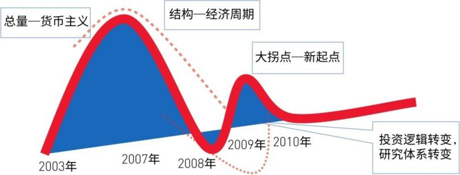
2000-2008年起飞期=研究"增长"为主。2009年进入走向成熟后，增长不再是核心问题，财富分配才是。这是工业化自身的宿命——起飞期财富集中，成熟期必然要求重新分配。在走向成熟阶段，我们同时遭遇长波衰退和萧条的双重抑制，不确定性远超起飞期。我们的理论在2008年《走向成熟》报告中实现了第一次飞跃。
熊彼特三周期嵌套是解释周期的核心工具：长波（50-60年）套中波（9-10年）套短波（40个月）。三个周期方向一致时趋势清晰，方向冲突时就需要判断哪个是主导——这时候市场就会很迷茫。
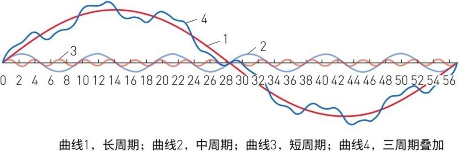
2007年底用长波预测衰退；2009年后用库存周期判断反弹顶底。现在（2010年），中周期将成为主导，"新起点"（新的增长点）是研究核心——新起点不等于技术创新（那是长波的事），而是产业升级和传统改造带动的中周期景气。
不同行业在不同经济发展阶段弹性不同，行业演进的次序和程度也不同。周期中的结构变动（短期配置）和经济特征中的结构变动（长期成长）要区分清楚——这对投资配置极其重要。
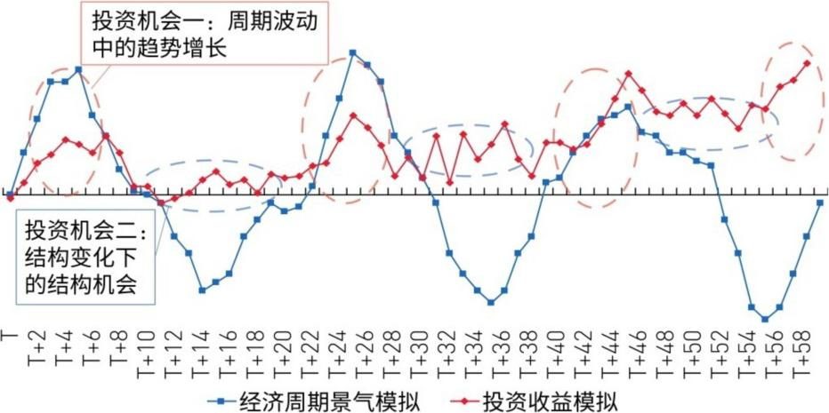
结构主义最大的特点：最终归宿一定是制度。缺点是不能给出精确的定量结论，优点是能给出总量分析看不到的方向性——对投资来说，方向性往往比精确数字更有意义。
拉美结构主义大师普雷维什说得很直白："经济发展天然地倾向于让成果局限在一小部分人手里。"罗斯托对分配制度的关注、奥尔森的"打破制度刚性"理论，都在说同一件事：经济增长放缓时，财富分配比增长本身更重要。
为什么分配问题会凸显？技术层面=资本边际收益递减+人口红利减少；制度层面=分利集团膨胀压制创新。必须进行实质性制度变革。
回顾结构主义框架的实战历程：2005年底——用罗斯托工业化转型期理论判断中国虚拟经济繁荣的起点。2005-2007年的大牛市本质上就是工业化起飞期实体经济支撑下的虚拟经济大繁荣。这个繁荣超越了常规经济周期的长度。
2007年底——观察到全球市场疲态，用资源约束+信用膨胀+美元币值三个要素判断：全球经济已进入长波衰退中的通胀阶段。信用膨胀和资产价格暴涨成为经济增长的"掘墓人"，2008年全球衰退不可避免。对中国来说，中国是美国的产业链上游，必然受到极大冲击——转攻为守的时候到了。
2008年秋季——次贷危机以一种极其暴力的方式验证了结构主义的判断，冲击程度甚至超出预期。中国改革开放以来首次被动陷入大衰退。但按照工业化理论，这本质上是起飞完成后的起飞萧条，具有必然性。2008年底=最剧烈阶段，之后将逐步复苏，展开中级反弹。
起飞→成熟的过渡很复杂：消费回落（收入滞后调整）、政府投资受限（去政策化+财政约束）、通胀预期显性化——2009年下半年=中级反弹终结，调整是主旋律。
2010年Q2=库存周期大拐点+长波阶段性拐点。旧增长模式转型已定，新动力还没建立——经济和市场趋势性下行。这个判断在2010年Q2之后再次被市场验证。
结构主义框架需要回答的三个核心问题：
① 周期嵌套的主导性选择：长波大拐点之后，中国的短、中、长周期如何互动？市场的顶和底由哪个周期主导？
② 结构变迁中的成长线索：是从投资+出口双轮驱动转向内需+消费？产业之间的关联和顺序会怎么变？哪些行业弹性更大？——这是中国特有的大结构变迁，不是西方那种小修小补。
③ 增长与分配的关系：起飞完成后，贫富差距达到高点，社会矛盾凸显，分配制度改革有多重要？制度红利能不能对冲经济下行风险？
三个周期的来源：基钦周期（短波，~40个月）——看库存和心理。厂家库存行为=短波驱动力。价格涨→增加库存，价格跌→消化库存。库存周期是研究短波的核心。
朱格拉周期（中波，~9-10年）——看资本支出。设备更新和投资周期=中波驱动力。
康德拉季耶夫周期（长波，~50-60年）——看重大危机和创新。争议最大因为没单一指标，但框架性最强。
熊彼特的伟大贡献：把三个周期嵌套在一起——1个长波=6个中波=18个短波。他还用创新理论来解释长波——不同技术创新对应不同长波。2008年金融危机=第五次长波从繁荣→衰退的大拐点。
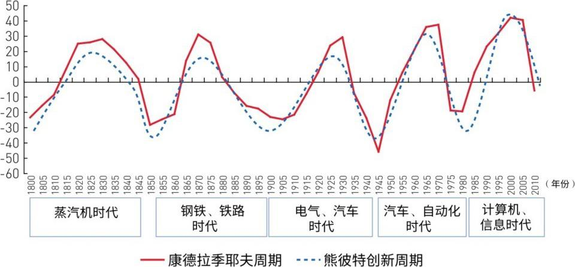
三周期嵌套的操作法则：三力同向=趋势强化（好判断）；三力冲突=混沌状态（市场迷茫），这时走势取决于主导力量。找到主导周期=找到经济的顶和底。
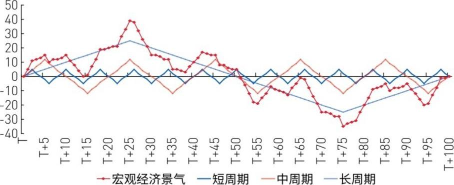
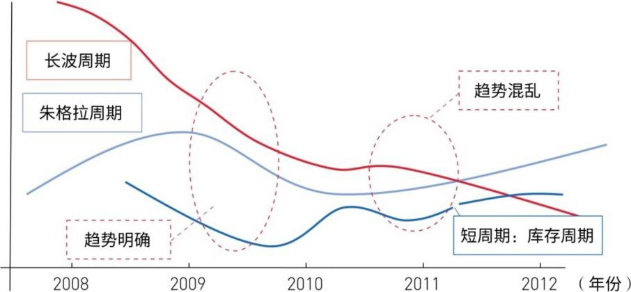
判断市场顶底的核心：先确定主导周期。2008-2009年主导力量是长波衰退（50年一遇），2009年之后主导力量变成库存周期（看价格和利率→超跌反弹）。二次去库存结束后，中周期（看固定资产投资）将成为主导。
⚠️ 重要教训：顶部容易预测（系统性因素），底部很难预测（微观因素）。真实需求从何而来？不在宏观政策，不在"城镇化"的故事——而在于中游企业微观的效率提升行为。不要轻信宏大叙事对底部的判断。
2010年4月大拐点后，长波进入衰退后半期（缓冲期）。未来3-5年=弱势均衡中的相对平稳。特征一：中周期繁荣会出现但不持久——货币政策已到极限，各经济体面临通缩或滞胀。
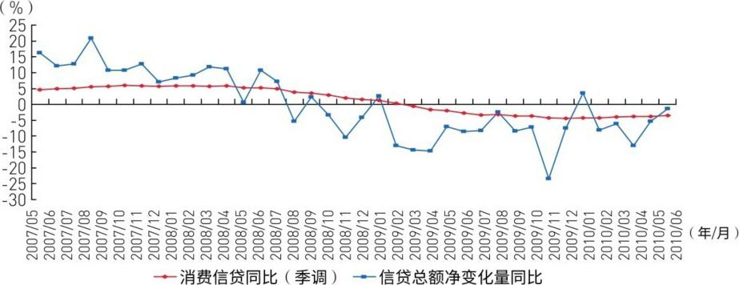
特征二：中国通胀是中期问题（持续但不爆发），长波衰退后半期=滞胀→通缩的过渡。关键是"虚实分离"——流动性看似充裕实则式微，泡沫机会如浮光掠影，抓不住。
特征三：经济政策效果减弱，各国开始政治博弈（如1970年代美国逼日元升值）。美国作为主导国始终是决定性力量。未来不确定性更多来自政治，关注军工、北斗等产业。
⚠️ 史无前例的差异：1970年代，美国（主导国）和日本（追赶国）同时滞胀。但这次不一样——美国通缩，中国滞胀。1980年代靠美国加息解决流动性崩溃，但这次的解药是什么？这是一个悬而未决的核心问题。
2010/2011年之交=二次去库存的底部（市场已达成共识）。真正重要的是中周期的启动机制——这决定了未来增长的斜率。
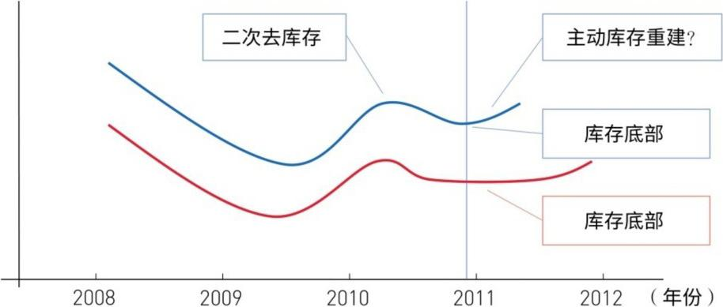
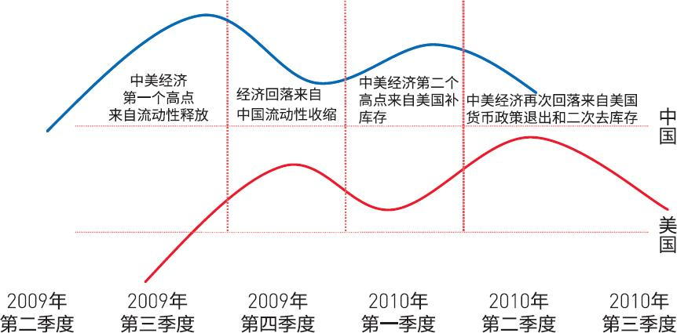
熊彼特的洞见：第一个短波=量变（反弹），第二个短波=质变（可能反转）。库存周期→资本投资周期的转换，是判断"反弹"还是"反转"的关键。2011年Q1/Q2=库存周期转换期，但不一定是新起点的开始。
中周期的本源=固定资产投资。但关键不是投资增长率，而是投资结构转换。新起点的寻找表面是周期问题，内核是结构问题。两个层次：大级别结构变动（长期）+周期中的结构变动（片段）。
美国=中心消费国，中国=外围生产国。美国总需求不足→全球进入低增长弱需求"新常态"。发展中国家无法与美国"脱钩"。
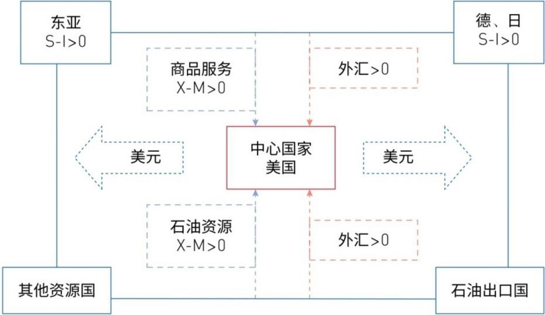
但历史经验表明：长波衰退后半期往往是追赶型经济体进一步繁荣的阶段。1970年代的日本和德国在美国减速时依然增长；1980年前的拉美在崩溃前也有中期景气。2010-2015年这个窗口，可能为中国的经济转型提供有利条件——这些国家当时的增长都是结构性的，都和工业化升级有关。
中美根本区别：中国=投资驱动的工业化过渡期→"大结构"问题；美国=消费驱动的成熟经济体→"大周期小结构"。
对美国来说，周期波动>结构变化（消费结构升级但消费占比稳定）。对中国来说，结构变化>周期波动——金融危机都打不倒中国（迅速回归原增长水平），但结构调整压力大得多。中国的机会在结构演进中找成长线索。
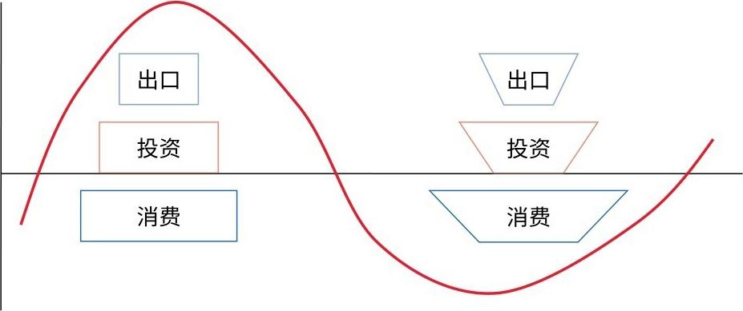
熊彼特的核心洞见："任何增长问题都是结构问题。"新一轮增长总是先有结构变化再有增长变化（量变→质变）。但区别在于：美国中周期启动的结构变动只是"周期发动力量的变化"（不一定进步）；中国一定是靠"结构进步"来发动周期——因此对中国的信心应该比对美国更高。
中国≈美国1900≈日本1965，正处于起飞→成熟升级过程中。走向成熟的五大变化：① 投资模式持续但结构实质性变化；② 大型化（中游偏上产业资本集中）；③ 新老主导产业交替→中游膨胀+装备业繁荣；④ 城市化加速+区域差异达峰→扩散；⑤ 贫富分化达峰→分配改革启动→多样化消费→大众消费时代准备。
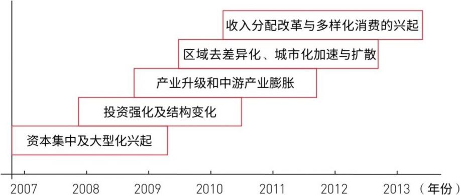
寻找成长的四大线索：需求转向 → 结构继承性 → 要素变更（刘易斯拐点） → 周期遗留（流动性）。
英美日的工业化都发生在长波繁荣期——天时好。但中国工业化成熟阶段碰上长波衰退期——挑战比日本大得多。核心矛盾：长波衰退=总需求下降；工业化升级=新产能不断被创造（总供给扩大）。
如果中国能创造新有效需求→工业化上升浪盖过全球衰退下跌力→还能保持高增长。如果不行→长波压制一切。工业化升级=外需萎缩下最根本的内需战略。
⚠️ 澄清：需求转向 ≠ 消费将成为主导。消费撑不起6%以上的增速。未来10年，固定资产投资仍是主导力量。资本市场不要抛弃投资品——2010年后的高投资是工业化转型的必然，是"结构的继承性"。
起飞后能否"自动增长"取决于投资率（资本积累程度）和新旧部门转化是否顺利。中国投资增速和结构都会变，但结构变化才是关键——因为结构决定速度。
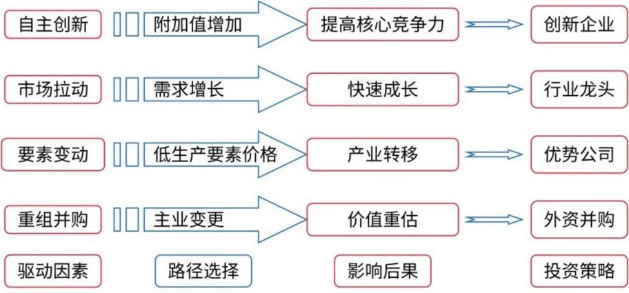
新起点大概率来自中游装备业。两个方向：旧主导产业升级+新主导产业兴起。关键是私人部门和资本积累——政府刺激不能带来可持续的"自动增长"。政策退出后私人部门主导的增长才是真新起点。
2008年中国劳动人口占比55.3%=接近峰值（日本1968年56%见顶）。劳动力从绝对剩余→相对剩余甚至结构性紧缺+工资上涨= 刘易斯拐点已悄然到来（2006-2010年间的某个时刻）。
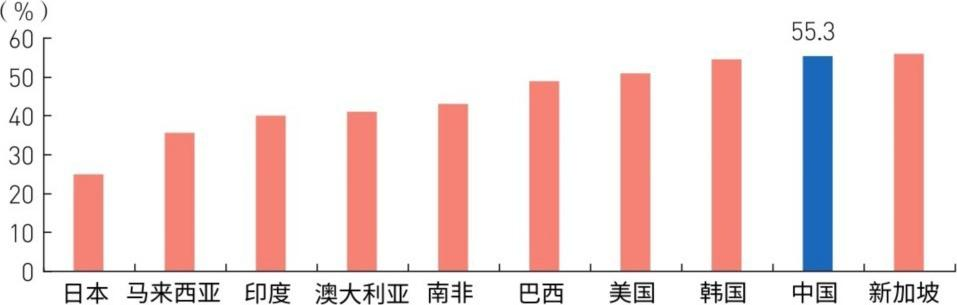
⚠️ 三重负面因素共振：走向成熟转型+刘易斯拐点（比日韩提前5-12年）+全球长波衰退。中国站在历史的岔路口——中等收入陷阱 vs 变革通往发达之路。
刘易斯拐点后的三大景象：① 增速中枢下移1-2个百分点（三驾马车中两驾半受损，但中国不缺钱）；② 通胀中枢上移1个百分点（工资上涨→农产品涨价→成本推动型通胀中期化）；③ 社会矛盾集中爆发（劳动力要求重分蛋糕，资方要求做大蛋糕→问题泛政治化）。
劳动力涨价→中国资本收益率中期下降（ROE趋势下行，对市场有长期影响）。不良贷款预测：2011年Q1压力最大，2012年集中爆发——不良率回升4-6个百分点，规模1.5-2万亿。不会再有"二次政策性剥离"的银行红利。
未来走势取决于"两个转换"：① 被动库存→主动库存周期；② 库存周期→资本支出周期（中周期）。第二个转换具有偶然性，不是必然发生的。
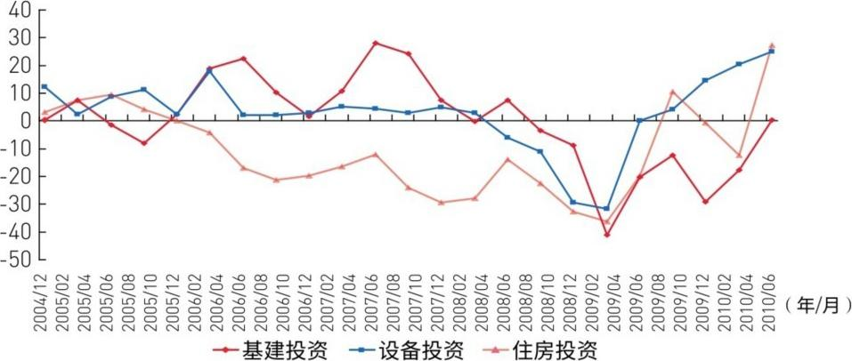
短→中周期的转换中的小结构变化意义重大——蕴藏未来新增长动力的要素。熊彼特认为中周期启动由企业家更新改造+效率提升驱动，不需要革命性技术创新。装备业和房地产是中周期启动的两大先导行业。美国1970年代的经验：建材+机械设备+电器+电子计算机。中国同理——设备投资扩张可能是中周期重启的模糊起点，更是大结构变化的前奏。
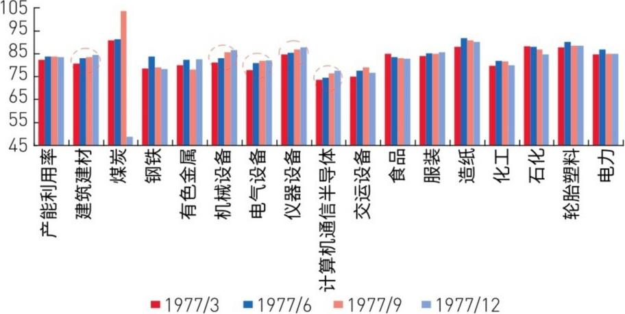
日本1975-1978年转换案例：二次去库存3个季度后→9个季度的中周期繁荣。转换中投资结构明显变化：中游偏下（装备、电子电气、精密仪器、汽车、家电）快速发展，中游偏上（钢铁、化工）重要性相对下降，上游萎缩。
投资方向转变规律：起飞→成熟阶段，重化工业大型化（兼并重组）+资本方向从上游向中下游转移。日本经验：中游上端→中游下端，企业追求成长性更强的下游项目。
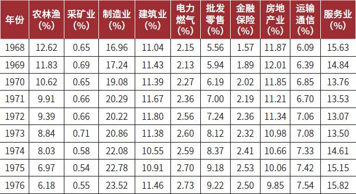
中国三大投资结构趋势：① 中游大型化（兼并重组热）；② 投资重点下移（中游上端→下端）=装备制造业繁荣；③ 第三产业大发展=新兴消费产业崛起。
为什么中游偏下行业将持续繁荣？三大原因：
① 长波衰退期+创新周期低谷——中游偏上（钢铁石化）是强周期行业，大环境向下；重化工业技术升级难度大，短期难有突破。
② 资源能源瓶颈（类似日本1960年代）——钢铁石化继续大投资=资源约束加剧+投资效率下降。政府会引导投资向下端倾斜。看好机械设备：自动化装备、高级机床、大型铸锻件、工程机械、交通运输设备、航空设备、轻工机械。
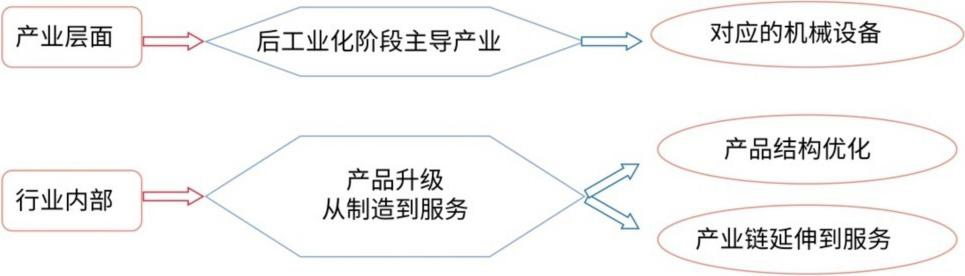
③ 城市化深入+消费时代临近——中游偏上（资本技术密集型）→大型化；中游偏下（更接近终端需求）→合理化和高级化。从2004年以来数据看：采掘、钢铁、石化投资增速已下降；电子、电气、汽车、医药、印刷投资高增长——这个趋势会强化。
第三产业三大趋势：
① 大型化+国际化：消费型产业横向兼并（抢市场），生产型产业纵向兼并（保上游）。都突破国界。
② 消费升级相关投资暴增：城市化率年增1%=每年新增1300-1400万城市人口=1000亿消费支出。消费升级从一线→二线→三四线梯次延伸。汽车、家电、教育、医疗、零售投资加速。
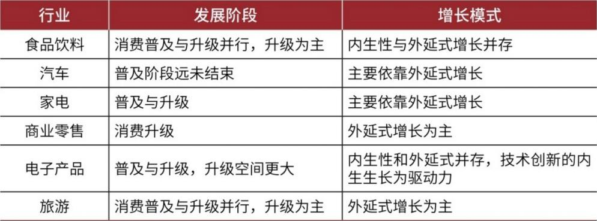
③ 技术创新相关产业空间最大：日本1960-70年代电子元器件、计算机、电气产出暴增。中国2010年前IT投资低于三产整体水平，2010年后空间巨大。三网融合未来3年市场6880亿（建设投资2490亿+信息服务4390亿）。
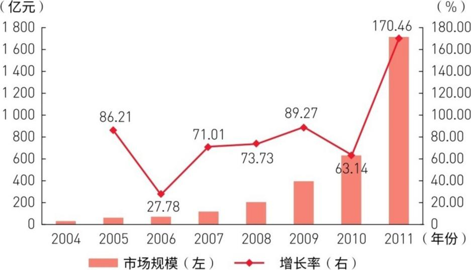
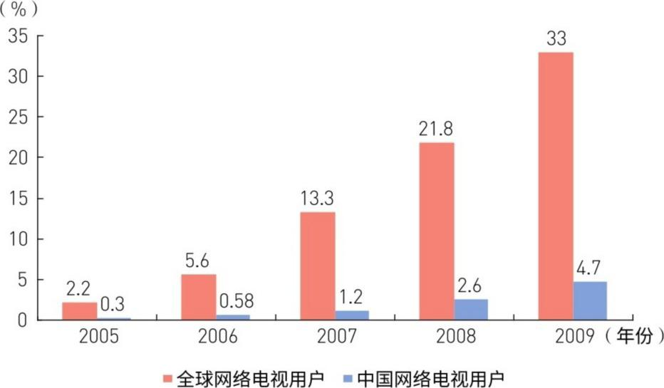
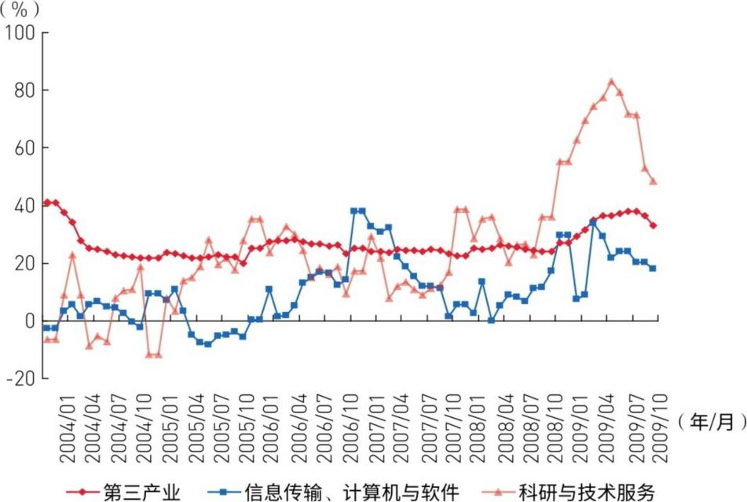
看好的新型消费产业：互联网、IT、电信增值、医疗健康、教育、传媒娱乐、通信设备、移动互联、物联网、云计算、数字出版。同时：智能电网、核电、新能源。这些结构变化最终将整体启动新一轮朱格拉周期（中周期）。
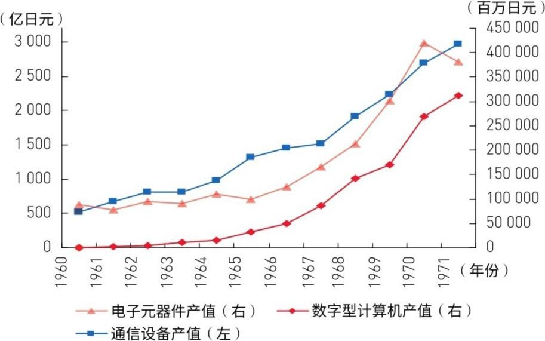
市场对"战略性新兴产业"的投资反映的是中期转型预期，不是中周期繁荣预期。这就是为什么必须区分两个级别的结构变动。
中周期拉动≠革命性技术创新（那是长波的事）。中周期靠的是技术扩散+组织模式创新+传统产业改造。未来中周期景气的拉动力大概率来自设备投资领域——基于现实需求的产业升级和消费兴起。投资品、半投资品中与增长动力相近的行业>重化工业投资品。
新起点不会立即出现。2011年上半年不会看到基于新增长点的景气。经济在真正的起点出现前处于"模糊状态"，最初动力来自价格下跌激发需求或局部公司增长。2011年前系统性反转基础欠缺。库存周期回落后2-4个季度混沌期是正常的。新起点本质上是被动供需规律的结果，不是政策规划的产物。
核心结论：中周期景气 ≠ 经济转型。中周期景气只是经济转型的一个片段。2012年之前，研究清楚转型背景下的中周期景气才是资本市场的核心命题。
💡 本章核心框架总结：结构主义 = 周期波动 + 结构演进，最终归宿是制度。未来20年（长波衰退+萧条期）正是结构主义的黄金适用期。中国独特的优势在于"大结构"变动——走向成熟阶段的工业化升级。新起点大概率来自中游装备业+设备投资领域，而非革命性技术创新。刘易斯拐点已至，三重负面因素共振，中国站在中等收入陷阱与变革通往发达之路的历史岔口。
| 原文术语 | 白话解释 |
|---|---|
| 结构主义经济学 | 研究经济增长动力源的学科，关注经济结构变化而非总量增长，核心线索是周期波动+结构演进 |
| 三周期嵌套 | 熊彼特的核心理论：1个长波（50-60年）嵌套6个中波（9-10年）嵌套18个短波（~40个月），三力同向趋势强化，三力冲突看主导 |
| 库存周期（基钦周期） | 约40个月的短周期，由企业库存调整行为驱动——价格涨→加库存，价格跌→去库存 |
| 中周期（朱格拉周期） | 约9-10年的资本支出周期，由设备投资和固定资产更新驱动 |
| 长波（康德拉季耶夫周期） | 约50-60年的超长周期，由重大技术创新驱动，分为繁荣→衰退→萧条→回升 |
| 二次去库存 | 库存周期末端，库存自然回落到底部，是经济从被动型向主动型库存周期切换的标志 |
| 新起点 | 中周期启动的标志，由私人部门资本积累和产业升级驱动，不等于技术创新 |
| 虚实分离 | 流动性充裕但实体经济无法吸收，虚拟经济与实体经济脱节，是流动性式微的前兆 |
| 分利集团 | 社会中通过政治或经济特权获取超额利益的集团，其膨胀会抑制创新和经济增长 |
| 制度刚性 | 现有制度结构难以被打破的状态，需要实质性制度变革才能突破 |
| 结构刚性 | 经济结构难以调整的状态，往往由制度刚性导致 |
| 中等收入陷阱 | 发展中国家达到中等收入水平后增长停滞、无法迈入高收入国家的现象 |
| 三网融合 | 电信网、广播电视网、互联网的融合，2010年中国的重大产业政策 |
| 后向效应/旁侧效应 | 主导产业对上游供应商的拉动（后向）和对周边配套产业的带动（旁侧） |
| 中坚企业 | 日本经济学术语，从中小企业中脱颖而出、具有技术创新能力的独立中等规模企业 |
| 朱格拉周期 | 即中周期（9-10年），由法国经济学家朱格拉1862年提出，核心驱动力是资本支出 |